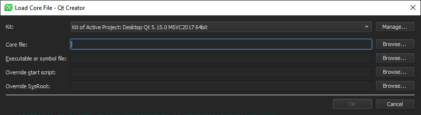

Load core files to the debugger
Use the core mode to inspect core files (crash dumps) that are generated from crashed processes on Linux and Unix systems if the system is set up to allow this.
Get core files
To enable the dumping of core files on a Unix system, enter the following command in the shell from which the application is launched:
ulimit -c unlimited
Attach to a core file
To launch the debugger in the core mode:
- Go to Debug > Start Debugging, and then select Load Core File.

- In Kit, select a build and run kit that was used for building the binary for which the core file was created. If the core file stems from a binary not built by Qt Creator or a process not initiated by Qt Creator, select a kit that matches the setup used as closely as possible, in respect to the specified device, toolchain, debugger, and sysroot.
- In Core file, specify the core file to inspect.
- In Executable of symbol file, specify a file that has debug information corresponding to the core file. Typically, this is the executable file or a
.debugfile if the debug information is stored separately from the executable. - In Override start script, specify a script file to run instead of the default start script.
- In Override SysRoot, specify the path to the
sysrootto use instead of the defaultsysroot.
For better results, use a properly configured project that has the sources of the crashed application.
Attach to the latest core file
On Linux systems, Qt Creator uses the coredumpctl command provided by the systemd crash handling to get core files. For more information, see systemd-coredump.
To attach to the latest core file, go to Debug > Start Debugging, and then select Load Last Core File.
See also How To: Debug, Debugging, Debuggers, Debugger, and Kits.